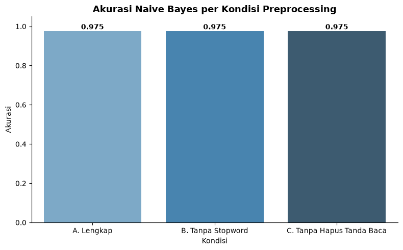
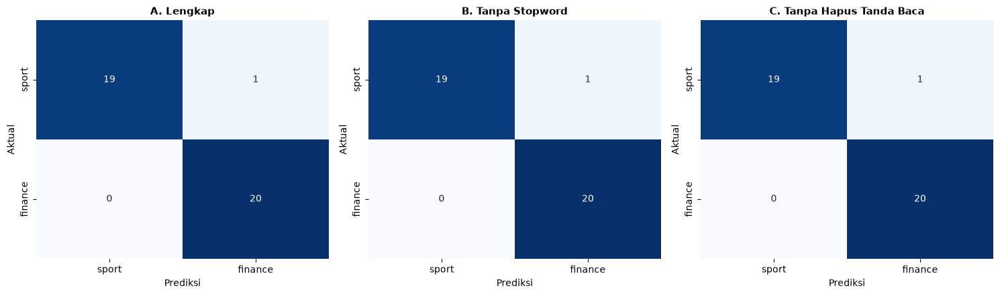

Perbandingan Preprocessing terhadap Performa Klasifikasi#
Notebook ini menguji seberapa besar pengaruh dua langkah preprocessing - penghapusan tanda baca dan penghapusan kata fungsi (stopword) - terhadap performa klasifikasi Naive Bayes, dengan membandingkan 3 kondisi:
Kondisi |
Tanda Baca |
Stopword |
Keterangan |
|---|---|---|---|
A. Lengkap |
Dihapus |
Dihapus |
Preprocessing penuh (baseline) |
B. Tanpa Stopword Removal |
Dihapus |
Dipertahankan |
Menguji efek stopword saja |
C. Tanpa Hapus Tanda Baca |
Dipertahankan |
Dihapus |
Menguji efek tanda baca saja |
Untuk menjaga eksperimen tetap terkendali (hanya 1 variabel berubah di tiap kondisi), ketiga kondisi dibangun dari teks mentah yang sama menggunakan pipeline pembersihan sederhana dan konsisten (case folding), bukan pipeline lengkap di Preprocessing.ipynb yang jauh lebih kompleks.
import pandas as pd
import numpy as np
import re
import matplotlib.pyplot as plt
import seaborn as sns
df = pd.read_excel("../data/dataset_berita_200.xlsx")
print("Dataset dimuat:", df.shape)
Dataset dimuat: (200, 4)
1. Bangun 3 Versi Teks (Kondisi A, B, C)#
from Sastrawi.StopWordRemover.StopWordRemoverFactory import StopWordRemoverFactory
stopword_remover = StopWordRemoverFactory().create_stop_word_remover()
def kondisi_a_lengkap(teks):
teks = teks.lower()
teks = re.sub(r"[^a-z\s]", " ", teks) # hapus tanda baca & angka
teks = re.sub(r"\s+", " ", teks).strip()
teks = stopword_remover.remove(teks) # hapus stopword
return teks
def kondisi_b_tanpa_stopword(teks):
teks = teks.lower()
teks = re.sub(r"[^a-z\s]", " ", teks) # hapus tanda baca & angka
teks = re.sub(r"\s+", " ", teks).strip()
return teks # stopword TIDAK dihapus
def kondisi_c_tanpa_hapus_tanda_baca(teks):
teks = teks.lower() # tanda baca DIPERTAHANKAN
teks = re.sub(r"\s+", " ", teks).strip()
teks = stopword_remover.remove(teks) # stopword tetap dihapus
return teks
df["kondisi_a"] = df["isi_berita"].apply(kondisi_a_lengkap)
df["kondisi_b"] = df["isi_berita"].apply(kondisi_b_tanpa_stopword)
df["kondisi_c"] = df["isi_berita"].apply(kondisi_c_tanpa_hapus_tanda_baca)
print("Selesai membangun 3 versi teks untuk 200 artikel.\n")
print("=== Contoh (100 karakter pertama, artikel id=1) ===")
print("A (lengkap) :", df["kondisi_a"].iloc[0][:100])
print("B (tanpa stopword) :", df["kondisi_b"].iloc[0][:100])
print("C (tanpa hapus tanda baca):", df["kondisi_c"].iloc[0][:100])
Selesai membangun 3 versi teks untuk 200 artikel.
=== Contoh (100 karakter pertama, artikel id=1) ===
A (lengkap) : chef de mission cdm indonesia todotua pasaribu terus memonitoring kondisi nagoya jepang jelang asian
B (tanpa stopword) : chef de mission cdm indonesia todotua pasaribu terus memonitoring kondisi di nagoya jepang jelang as
C (tanpa hapus tanda baca): chef de mission (cdm) indonesia todotua pasaribu terus memonitoring kondisi nagoya, jepang jelang as
2. Statistik Ukuran Vocabulary Tiap Kondisi#
hasil_vocab = {}
for kondisi in ["kondisi_a", "kondisi_b", "kondisi_c"]:
semua_token = " ".join(df[kondisi]).split()
hasil_vocab[kondisi] = {
"total_token": len(semua_token),
"kata_unik": len(set(semua_token)),
}
pd.DataFrame(hasil_vocab).T
| total_token | kata_unik | |
|---|---|---|
| kondisi_a | 51796 | 7419 |
| kondisi_b | 65425 | 7439 |
| kondisi_c | 54021 | 11918 |
3. TF-IDF + Naive Bayes untuk Tiap Kondisi#
Untuk tiap kondisi, teks diubah menjadi TF-IDF, dataset dibagi menjadi data latih dan data uji (dengan pembagian yang sama di ketiga kondisi agar perbandingannya adil), lalu diklasifikasikan menggunakan Multinomial Naive Bayes.
from sklearn.feature_extraction.text import TfidfVectorizer
from sklearn.model_selection import train_test_split
from sklearn.naive_bayes import MultinomialNB
from sklearn.metrics import accuracy_score, classification_report, confusion_matrix
# Pembagian data yang SAMA untuk ketiga kondisi (agar perbandingan adil)
indeks_latih, indeks_uji = train_test_split(
df.index, test_size=0.2, stratify=df["label"], random_state=42
)
def evaluasi_kondisi(kolom_teks):
vectorizer = TfidfVectorizer(min_df=2)
X = vectorizer.fit_transform(df[kolom_teks])
y = df["label"]
X_latih, X_uji = X[indeks_latih], X[indeks_uji]
y_latih, y_uji = y.loc[indeks_latih], y.loc[indeks_uji]
model = MultinomialNB()
model.fit(X_latih, y_latih)
prediksi = model.predict(X_uji)
akurasi = accuracy_score(y_uji, prediksi)
return akurasi, y_uji, prediksi, X.shape[1]
hasil = {}
for kondisi, nama in [("kondisi_a", "A. Lengkap"), ("kondisi_b", "B. Tanpa Stopword"), ("kondisi_c", "C. Tanpa Hapus Tanda Baca")]:
akurasi, y_uji, prediksi, jumlah_fitur = evaluasi_kondisi(kondisi)
hasil[nama] = {"akurasi": akurasi, "jumlah_fitur_tfidf": jumlah_fitur, "y_uji": y_uji, "prediksi": prediksi}
print(f"{nama:28} -> akurasi: {akurasi:.4f} (jumlah fitur TF-IDF: {jumlah_fitur})")
A. Lengkap -> akurasi: 0.9750 (jumlah fitur TF-IDF: 3741)
B. Tanpa Stopword -> akurasi: 0.9750 (jumlah fitur TF-IDF: 3770)
C. Tanpa Hapus Tanda Baca -> akurasi: 0.9750 (jumlah fitur TF-IDF: 3919)
4. Bandingkan Hasil Secara Visual#
ringkasan = pd.DataFrame({
"Kondisi": list(hasil.keys()),
"Akurasi": [v["akurasi"] for v in hasil.values()],
"Jumlah Fitur TF-IDF": [v["jumlah_fitur_tfidf"] for v in hasil.values()],
})
ringkasan
| Kondisi | Akurasi | Jumlah Fitur TF-IDF | |
|---|---|---|---|
| 0 | A. Lengkap | 0.975 | 3741 |
| 1 | B. Tanpa Stopword | 0.975 | 3770 |
| 2 | C. Tanpa Hapus Tanda Baca | 0.975 | 3919 |
fig, ax = plt.subplots(figsize=(8, 5))
sns.barplot(data=ringkasan, x="Kondisi", y="Akurasi", hue="Kondisi", palette="Blues_d", legend=False, ax=ax)
for i, v in enumerate(ringkasan["Akurasi"]):
ax.text(i, v + 0.01, f"{v:.3f}", ha="center", fontweight="bold")
ax.set_ylim(0, 1.05)
ax.set_title("Akurasi Naive Bayes per Kondisi Preprocessing", fontsize=13, fontweight="bold")
sns.despine(ax=ax)
plt.tight_layout()
plt.show()

Confusion Matrix Tiap Kondisi#
fig, axes = plt.subplots(1, 3, figsize=(15, 4.5))
for ax, (nama, v) in zip(axes, hasil.items()):
cm = confusion_matrix(v["y_uji"], v["prediksi"], labels=["sport", "finance"])
sns.heatmap(cm, annot=True, fmt="d", cmap="Blues", ax=ax,
xticklabels=["sport", "finance"], yticklabels=["sport", "finance"], cbar=False)
ax.set_title(nama, fontsize=11, fontweight="bold")
ax.set_xlabel("Prediksi")
ax.set_ylabel("Aktual")
plt.tight_layout()
plt.show()

Ringkasan#
Ketiga kondisi diuji dengan pembagian data latih/uji yang identik, sehingga selisih akurasi yang muncul murni disebabkan oleh perbedaan langkah preprocessing, bukan faktor lain.
Menghapus tanda baca umumnya berdampak pada jumlah fitur TF-IDF (karena tanpa pembersihan, kombinasi tanda baca dapat menciptakan token yang tidak konsisten), sementara menghapus stopword mengurangi jumlah fitur namun berfokus pada kata yang membawa makna topik.
Perbandingan akurasi di atas menunjukkan bagaimana kedua langkah preprocessing tersebut secara empiris memengaruhi (atau tidak banyak memengaruhi) kemampuan model dalam membedakan artikel sport dan finance pada dataset ini.